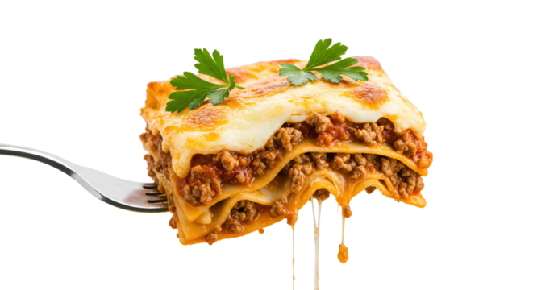

Lasagna

Description
A classic lasagna recipe involves layering cooked pasta sheets with a meat sauce and a cheese mixture, then baking it until bubbly and golden.
Key steps include preparing a meat sauce, mixing ricotta with egg and parmesan, and then assembling the dish in a baking dish with a final layer of sauce and mozzarella.
Ingredients
- Lasagna sheets (oven-ready or regular)
- Ground beef and/or Italian sausage
- Onion and garlic
- Tomato sauce, crushed tomatoes, and tomato paste
- Italian seasoning, oregano, basil, salt, and pepper
- Ricotta cheese
- Eggs
- Parmesan cheese
- Mozzarella cheese
Steps
- Prepare the meat sauce: Brown ground meat with onion and garlic. Drain the fat, then stir in tomato products and seasonings. Simmer the sauce to let the flavors meld.
- Cook the pasta: If using regular lasagna sheets, cook them according to package directions until al dente. If using oven-ready sheets, skip this step.
- Mix the cheese filling: In a bowl, combine ricotta cheese, eggs, and Parmesan cheese. Season with salt, pepper, and any other desired seasonings, mixing until smooth.
- Assemble the layers:
- Spread a thin layer of meat sauce on the bottom of a 9x13 inch baking dish to prevent sticking.
- Place a layer of lasagna sheets over the sauce.
- Spread about one-third of the ricotta mixture over the noodles.
- Spoon about one-third of the remaining meat sauce over the cheese.
- Sprinkle with some mozzarella and parmesan cheeses.
- Repeat the layers of noodles, ricotta mixture, meat sauce, and cheese two more times.
- Bake the lasagna:
Cover the dish with foil.Bake at \(375\degree F\) (or \(350\degree F\), depending on the recipe) for 30-90 minutes, or until hot and bubbly.Remove the foil during the last 15 minutes to allow the top to brown.Rest and serve: Let the lasagna rest for 10-15 minutes before cutting and serving to allow it to set.
Home